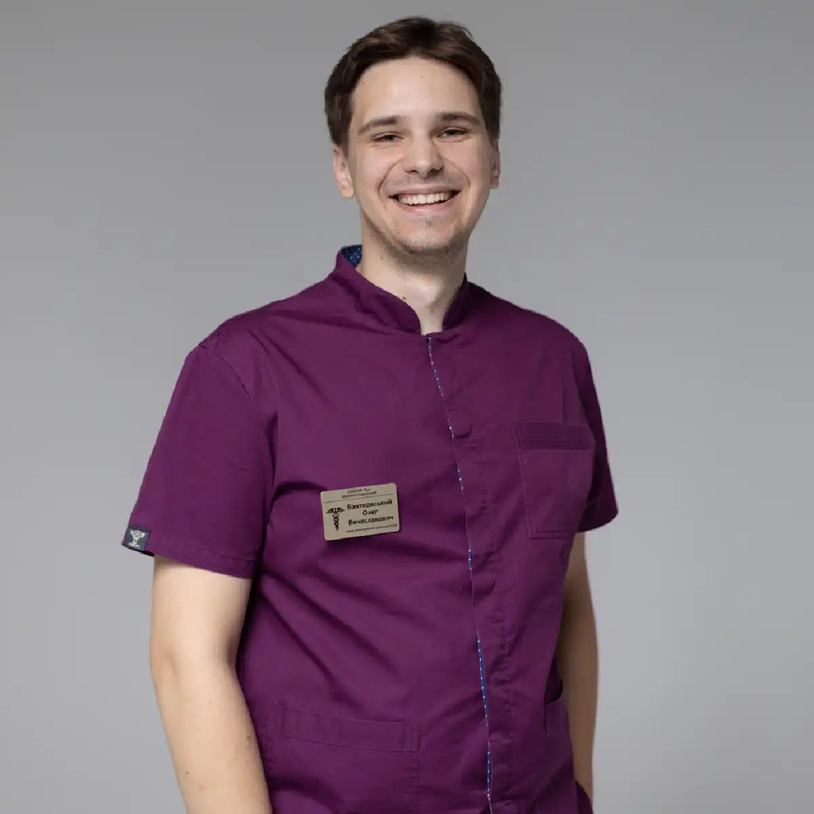

+38(068) 79 72 782
+38(068) 79 72 782Лікування алкоголізму Одеса
Безпечне лікування. Стійкий результат


Безкоштовна консультація, працюємо цілодобово 24/7
Безпечне лікування. Стійкий результат
Алкоголізм — це хронічне прогресуюче захворювання, яке зачіпає не лише фізичне здоров’я людини, а й глибоко впливає на її психоемоційний стан, сімейні стосунки, професійну діяльність і соціальне життя загалом. На ранніх етапах залежність може виглядати як «звичка розслаблятися» або регулярне вживання алкоголю на вихідних, однак з часом формується стійка психологічна і фізична тяга. Людина поступово втрачає контроль над кількістю випитого, збільшуються дози, частішають епізоди вживання, з’являються запої та необхідність пити не заради задоволення, а для того, щоб зняти внутрішнє напруження або погане самопочуття. У міру розвитку алкоголізму страждають практично всі системи організму. Порушується робота печінки, серця, судин, нервової системи, погіршується пам’ять, концентрація, емоційна стійкість. Алкоголь починає руйнувати особистість людини: знижується відповідальність, погіршуються стосунки з близькими, з’являються проблеми на роботі, зростає соціальна ізоляція. При цьому багато залежних тривалий час заперечують наявність проблеми, що відкладає звернення по допомогу і підвищує ризик тяжких ускладнень.
Лікування алкоголізму в Одесі — це не разова процедура і не «тимчасове полегшення», а професійна медична допомога, спрямована на безпечну і контрольовану відмову від алкоголю, відновлення фізичного і психічного стану, а також формування стійкої тверезості. Комплексний підхід включає детоксикацію, стабілізацію стану, роботу з психологічною залежністю і профілактику зривів. Важливу роль відіграє індивідуальний підбір методів лікування з урахуванням стадії захворювання, стану здоров’я і особистої мотивації пацієнта. Чим раніше розпочинається лікування алкоголізму, тим вища ймовірність зберегти здоров’я, уникнути незворотних наслідків для організму і відновити якість життя. Своєчасне звернення до спеціалістів дозволяє зупинити розвиток залежності, знизити ризик ускладнень і дати людині реальний шанс повернутися до повноцінного, тверезого і стабільного життя.
Лікування алкогольної залежності потрібне не лише при тривалих і тяжких запоях. Уже на ранніх стадіях алкоголізм проявляється тривожними ознаками, які часто залишаються без належної уваги. До них належать втрата контролю над кількістю випитого, регулярне вживання алкоголю «для розслаблення», погіршення самопочуття і настрою без спиртного, а також зростання толерантності, коли для досягнення звичного ефекту потрібна дедалі більша доза. Ці зміни свідчать про формування залежності, навіть якщо людина продовжує вести соціально активне життя і не вважає себе хворою.
Основна небезпека ранніх стадій алкоголізму полягає в тому, що проблема тривалий час не усвідомлюється. Багато хто переконує себе, що ситуація тимчасова, що «у будь-який момент можна зупинитися», списують вживання на стрес, втому або життєві обставини. Однак саме в цей період залежність прогресує найактивніше, поступово зачіпаючи психіку і фізіологію людини. Відсутність лікування на цьому етапі значно підвищує ризик переходу захворювання у тяжчу форму. Раннє лікування алкогольної залежності дозволяє зупинити розвиток захворювання на початковій стадії, уникнути тяжких наслідків для здоров’я і значно полегшити процес відновлення. Чим раніше людина отримує медичну і психологічну допомогу, тим вища ймовірність швидкого повернення до стабільної тверезості та збереження якості життя.
Коли алкоголізм стосується близької людини, родичі часто відчувають розгубленість, страх, почуття провини і повне безсилля. Сім’я опиняється у постійному напруженні, намагаючись знайти правильне рішення і допомогти, не погіршивши ситуацію. На практиці перші спроби допомоги нерідко зводяться до вмовлянь, обіцянок, погроз або жорсткого тиску. Однак такі методи, як правило, не дають результату і лише посилюють конфлікт, викликаючи у залежної людини агресію, заперечення проблеми або відхід у ще глибше вживання алкоголю. Алкоголізм — це не прояв слабкості характеру і не свідомий вибір, а захворювання, яке змінює мислення, поведінку і емоційні реакції людини. Залежний часто щиро переконаний, що контролює ситуацію, і сприймає спроби тиску як напад. Саме тому розмови на підвищених тонах, ультиматуми і скандали рідко призводять до бажаного ефекту і можуть зруйнувати довіру всередині сім’ї.
Найбільш правильним і ефективним кроком у такій ситуації є звернення за професійною консультацією до нарколога. Спеціаліст допомагає об’єктивно оцінити ступінь залежності, можливі ризики для здоров’я і психіки, а також пояснює родичам, як грамотно вибудувати спілкування із залежною людиною. Часто саме правильно підібрані слова і спокійна, виважена позиція сім’ї стають першим кроком до прийняття лікування. Підтримка близьких відіграє величезну роль у процесі одужання, однак вона має поєднуватися з медичним лікуванням і професійною допомогою. Коли сім’я перестає боротися наодинці і діє спільно зі спеціалістами, шанси на успішне лікування алкоголізму значно зростають. Такий підхід допомагає не лише стабілізувати стан пацієнта, а й зберегти стосунки, знизити емоційне напруження і повернути надію на повноцінне, тверезе життя.
Для багатьох пацієнтів конфіденційність є вирішальною умовою при зверненні за наркологічною допомогою. Анонімне лікування алкоголізму в Одесі дозволяє отримати повноцінну медичну підтримку без постановки на облік, без передачі інформації державним структурам, роботодавцям або третім особам. Це особливо важливо для людей, які обіймають відповідальні посади, ведуть бізнес, працюють у сфері послуг або просто не хочуть, щоб факт лікування став відомим оточенню. Страх розголосу часто стає причиною того, що людина відкладає звернення по допомогу на місяці або навіть роки, поки залежність прогресує і стан здоров’я погіршується. Можливість анонімного лікування знімає цей бар’єр і дозволяє звернутися до спеціалістів вчасно, не чекаючи тяжких запоїв, ускладнень або критичних ситуацій. Пацієнт може бути впевнений, що вся інформація про лікування залишається строго конфіденційною.
Анонімність створює психологічно комфортне і безпечне середовище, у якому людина почувається захищеною і не відчуває тиску або сорому. У таких умовах пацієнтові легше бути відвертим із лікарем, чесно говорити про кількість уживаного алкоголю, тривалість залежності та супутні проблеми. Це, своєю чергою, дозволяє спеціалісту точніше оцінити стан і підібрати ефективну індивідуальну схему лікування. Відсутність додаткового стресу, пов’язаного зі страхом осуду або наслідків для репутації, допомагає пацієнтові зосередитися на відновленні, дотримуватися рекомендацій лікаря і проходити лікування усвідомлено. Саме тому анонімний формат вважається одним із найефективніших при лікуванні алкогольної залежності і значно підвищує шанси на стійкий результат та повернення до повноцінного життя.
Вартість лікування алкоголізму в Одесі починається від 2199 грн.
| Популярні послуги | Ціна |
|---|---|
| Нарколог Одеса | Від 2199 грн |
| Крапельниця від алкоголю | Від 2199 грн |
| Виведення із запою вдома | Від 2199 грн |
| Кодування від алкоголізму | Від 6000 грн |
Лікування алкоголізму може проводитися як удома, так і в умовах клініки, і вибір формату завжди залежить від стану пацієнта, стадії залежності та медичних показань. Обидва варіанти мають свої переваги і застосовуються строго за рекомендацією лікаря після первинного огляду та оцінки ризиків. Домашній формат лікування підходить пацієнтам зі стабільним станом, коли відсутні ознаки тяжкої інтоксикації, ускладнень або загрози для життя. Такий варіант особливо зручний для людей, які фізично погано переносять поїздки, хочуть зберегти повну анонімність або відчувають сильний психологічний дискомфорт при відвідуванні медичних закладів. Лікування вдома дозволяє розпочати допомогу негайно, у звичній обстановці, без зайвого стресу. Лікар приїжджає з усім необхідним, проводить огляд, детоксикацію та дає подальші рекомендації щодо відновлення і продовження лікування.
Лікування в клініці рекомендується у складніших і тяжчих випадках. До них належать тривалі запої, виражена алкогольна інтоксикація, наявність хронічних захворювань серця, печінки, підшлункової залози, а також високий ризик ускладнень з боку нервової системи. В умовах клініки пацієнт перебуває під постійним медичним наглядом, що дозволяє оперативно реагувати на будь-які зміни стану, проводити розширену діагностику і поетапно коригувати лікування. Остаточний вибір формату лікування завжди робить лікар, керуючись виключно інтересами безпеки пацієнта. Такий індивідуальний підхід дозволяє підібрати найефективнішу тактику допомоги, знизити ризики ускладнень і створити оптимальні умови для відновлення та подальшої роботи з алкогольною залежністю.
Крапельниця від алкоголю вважається одним із найефективніших і безпечних методів зняття алкогольної інтоксикації та виходу із запою, особливо в ситуаціях, коли організм уже не справляється з наслідками вживання самостійно. Інфузійна терапія діє комплексно: препарати вводяться безпосередньо в кровотік, завдяки чому починають працювати швидше й ефективніше. Такий спосіб введення дозволяє оминути шлунково-кишковий тракт, який при алкогольному отруєнні часто подразнений і не здатний повноцінно засвоювати ліки. Саме тому помітне покращення самопочуття у більшості пацієнтів настає вже в перші години після початку процедури.
Основне завдання крапельниці — знизити токсичне навантаження на організм і стабілізувати його роботу. Алкоголь і продукти його розпаду викликають виражене зневоднення, порушення водно-електролітного балансу, перевантаження серцево-судинної та нервової систем. На цьому тлі з’являються слабкість, головний біль, тремор, тривожність, стрибки тиску та порушення серцевого ритму. Інфузійна терапія допомагає прискорити виведення токсинів, поповнити дефіцит рідини та електролітів, нормалізувати артеріальний тиск, пульс і загальне самопочуття. Це особливо важливо при запої, коли самостійний вихід може бути не лише важким, а й небезпечним, супроводжуючись судомами, аритміями та різким погіршенням стану.
Склад крапельниці завжди підбирається індивідуально після огляду пацієнта. Лікар враховує тривалість і характер вживання алкоголю, ступінь інтоксикації, вік, наявність хронічних захворювань, стан серця, печінки та нервової системи. Такий персональний підхід дозволяє підібрати оптимальну схему лікування і уникнути небажаних реакцій. Протягом усієї процедури спеціаліст контролює реакцію організму, стежить за життєво важливими показниками і за потреби оперативно коригує терапію. Саме медичний контроль робить крапельницю максимально безпечною і знижує ризик ускладнень. Крапельниця від алкоголю не є повноцінним лікуванням алкогольної залежності і не усуває психологічну тягу до спиртного. Однак вона відіграє ключову роль як перший етап комплексного лікування. Зняття інтоксикації дозволяє стабілізувати стан, повернути ясність свідомості і фізичні сили, після чого стає можливим подальше лікування алкоголізму — робота із залежністю, застосування методів кодування або проходження реабілітації.
Центр лікування алкоголізму — це спеціалізований медичний простір, де пацієнт отримує комплексну і системну допомогу, спрямовану не лише на усунення гострих наслідків уживання алкоголю, а й на глибоку роботу із самою залежністю. Такий підхід реалізується в клініці UmbrellaPlus, де лікування будується поетапно і з урахуванням індивідуальних особливостей кожного пацієнта. У межах комплексної допомоги проводиться медична стабілізація стану: зняття алкогольної інтоксикації, виведення із запою, відновлення водно-електролітного балансу і підтримка роботи життєво важливих органів — серця, печінки та нервової системи. Це дозволяє безпечно усунути гострі симптоми і підготувати організм до подальшого лікування. Усі етапи терапії проходять під контролем кваліфікованих спеціалістів із застосуванням сучасних медичних протоколів.
Важливою частиною лікування є психологічна підтримка, спрямована на роботу з причинами формування залежності, внутрішніми конфліктами і стресовими чинниками, які часто лежать в основі зловживання алкоголем. Психотерапевтична допомога допомагає змінити деструктивні моделі поведінки та сформувати стійку мотивацію до тверезості. Завершальним етапом стає реабілітація, метою якої є закріплення досягнутого результату, відновлення соціальної адаптації та зниження ризику рецидивів. Такий комплексний підхід дозволяє не обмежуватися тимчасовим покращенням самопочуття, а створити міцну основу для довгострокового відновлення, збереження здоров’я і повернення до повноцінного життя без алкоголю.
Кодування від алкоголізму — це один із методів лікування алкогольної залежності, спрямований на формування стійкої та усвідомленої відмови від уживання спиртного. Його основне завдання — створити внутрішній психологічний або фізіологічний бар’єр, який допомагає людині утримуватися від алкоголю в період відновлення і знижує ризик зривів. При цьому кодування не розглядається як самостійне або універсальне рішення проблеми і ніколи не проводиться ізольовано. Процедура можлива лише після детоксикації, стабілізації загального стану та обов’язкового медичного огляду, який дозволяє оцінити безпеку і доцільність обраного методу.
Залежно від стану пацієнта, стадії залежності та медичних показань кодування може виконуватися медикаментозним або психотерапевтичним способом. Медикаментозні методи ґрунтуються на застосуванні препаратів, які викликають виражену негативну реакцію організму при вживанні алкоголю — від різкого погіршення самопочуття до серйозних фізіологічних симптомів. Це формує стійкий зв’язок між уживанням спиртного і неприємними наслідками, що слугує додатковим стримувальним чинником. Психотерапевтичні методи, своєю чергою, спрямовані на формування стійкої установки на тверезість, зміну ставлення до алкоголю і роботу з внутрішніми установками на рівні свідомості та підсвідомості. Вибір конкретного методу кодування завжди здійснюється індивідуально. Лікар враховує вік пацієнта, стаж і форму вживання алкоголю, наявність хронічних і супутніх захворювань, особливості психоемоційного стану та рівень мотивації. Такий персональний підхід дозволяє знизити ризики і підвищити ефективність процедури, уникаючи шаблонних рішень.
Кодування найбільш ефективне як частина комплексного лікування алкогольної залежності. Воно дає людині час і простір для відновлення, допомагає утриматися від вживання у критичний період, але не усуває глибинні психологічні причини залежності. Саме тому кодування має обов’язково поєднуватися з подальшою роботою з наркологом, психотерапією, а за потреби — з реабілітаційними програмами та підтримкою сім’ї. Обов’язковою умовою проведення процедури є усвідомлена згода пацієнта. Кодування не може бути нав’язане або проведене примусово, оскільки лише за наявності внутрішньої мотивації і готовності до змін воно здатне дати стійкий і довгостроковий результат, стати надійною опорою на шляху до тверезого і повноцінного життя.
Сучасне лікування алкоголізму ґрунтується на комплексному і поетапному підході, який спрямований не лише на усунення симптомів залежності, а й на роботу з її причинами, а також на запобігання повторним зривам. Такий підхід дозволяє впливати на захворювання всебічно — на фізичному, психологічному та соціальному рівнях, що значно підвищує ефективність терапії і шанси на стійку ремісію. В основі лікування лежить медична детоксикація, мета якої — безпечно вивести алкоголь і продукти його розпаду з організму, зняти інтоксикацію та стабілізувати загальний стан пацієнта. Детоксикація допомагає відновити роботу внутрішніх органів, знизити навантаження на серце і нервову систему та підготувати організм до подальших етапів лікування.
Наступним етапом є медикаментозна підтримка, спрямована на зменшення тяги до алкоголю, нормалізацію сну, емоційного стану та роботи нервової системи. Препарати підбираються індивідуально з урахуванням стану здоров’я, стадії залежності та супутніх захворювань, що робить лікування більш безпечним і результативним. Невід’ємною частиною сучасного лікування є психотерапія. Вона допомагає пацієнтові усвідомити причини формування залежності, змінити деструктивні моделі поведінки, навчитися справлятися зі стресом і емоційними навантаженнями без алкоголю. Робота з психологом або психотерапевтом відіграє ключову роль у формуванні стійкої мотивації до тверезості.
Для закріплення результату застосовуються реабілітаційні програми, які спрямовані на відновлення соціальної адаптації, навичок тверезого життя і впевненості в собі. Реабілітація допомагає людині повернутися до нормального ритму життя, відновити стосунки з близькими і знизити ймовірність повернення до вживання. Завершальним і вкрай важливим елементом є профілактика рецидивів. Вона включає регулярне спостереження у спеціалістів, підтримувальну терапію, психологічну допомогу та рекомендації щодо способу життя. Саме профілактика дозволяє зберегти досягнутий результат і зробити тверезість стійкою та довгостроковою, а не тимчасовим заходом.
Жіночий алкоголізм має свої виражені особливості і потребує особливого, більш тонкого підходу до лікування. На відміну від чоловічої залежності, у жінок алкоголізм, як правило, розвивається швидше, а зміни у психіці й організмі настають у коротші строки. Це пов’язано з гормональними особливостями, меншою масою тіла, іншим обміном речовин і вищою чутливістю нервової системи до впливу алкоголю. Навіть за порівняно невеликого стажу вживання можуть формуватися тяжкі форми залежності та виражені ускладнення.
Алкогольна залежність у жінок часто супроводжується сильними емоційними порушеннями: тривожністю, депресивними станами, почуттям провини і сорому, різкими перепадами настрою. Нерідко вживання алкоголю стає способом впоратися з внутрішніми переживаннями, стресом, самотністю або психологічними травмами. При цьому жінки довше приховують проблему і рідше звертаються по допомогу, побоюючись осуду з боку суспільства, сім’ї або колег. Саме тому лікування жіночого алкоголізму потребує делікатного, індивідуального і максимально анонімного підходу. Важливо не лише зняти фізичну залежність та інтоксикацію, а й створити безпечне, підтримувальне середовище, у якому пацієнтка зможе відкрито говорити про свої переживання. Особливий акцент робиться на психологічній підтримці, відновленні емоційного стану, роботі із самооцінкою і причинами, що призвели до залежності. Комплексне лікування допомагає жінці не просто відмовитися від алкоголю, а відновити внутрішній баланс, повернути впевненість у собі, налагодити стосунки з близькими і поступово повернутися до повноцінного життя. Такий підхід значно знижує ризик рецидивів і робить результат лікування більш стійким і довгостроковим.
Пивний алкоголізм часто недооцінюється, оскільки пиво сприймається як «легкий» і соціально прийнятний напій. Однак регулярне вживання пива може призводити до формування стійкої алкогольної залежності, яка за своїми наслідками нічим не поступається іншим формам алкоголізму. Поступово збільшуються обсяги споживання, розвивається толерантність, а відмова від пива починає супроводжуватися дратівливістю, тривогою і погіршенням самопочуття.
Особливу небезпеку пивний алкоголізм становить через його системний вплив на організм. Часте і тривале вживання пива призводить до гормональних порушень, зміни обміну речовин, збільшення маси тіла, розвитку так званого «пивного серця», проблем з артеріальним тиском і серцево-судинною системою. Страждає також печінка, підшлункова залоза і нервова система, а у чоловіків і жінок можуть виникати серйозні ендокринні збої. Лікування пивного алкоголізму проводиться за тими самими медичними принципами, що й лікування інших форм алкогольної залежності. Воно включає детоксикацію, медикаментозну підтримку, роботу з психологічною тягою до алкоголю та реабілітаційні заходи. Важливим етапом є усвідомлення проблеми, адже саме недооцінка шкоди пива часто заважає своєчасному зверненню по допомогу. Комплексний і професійний підхід дозволяє не лише відмовитися від вживання пива, а й відновити порушені функції організму, нормалізувати гормональний фон і знизити ризик розвитку тяжких ускладнень, формуючи стійку тверезість у довгостроковій перспективі.
Реабілітація є ключовим і незамінним етапом лікування алкогольної залежності, оскільки саме на цьому етапі відбувається глибока робота з психологічною тягою до алкоголю та формування стійкого тверезого способу життя. Навіть після успішної детоксикації, виведення із запою та стабілізації фізичного стану ризик зриву залишається досить високим. Це пов’язано з тим, що алкогольна залежність зачіпає не лише тіло, а й мислення, емоції, звички і способи реагування на життєві труднощі. Без повноцінної реабілітації глибинні причини залежності продовжують впливати на поведінку людини і можуть призвести до повернення до вживання алкоголю.
Реабілітаційні програми спрямовані на зміну ставлення до алкоголю і перегляд звичних моделей поведінки. Під час реабілітації пацієнт вчиться усвідомлювати пускові механізми вживання — стрес, тривогу, самотність, конфлікти, емоційні перевантаження. Замість автоматичної реакції у вигляді вживання спиртного формуються нові, здорові способи справлятися з труднощами. Людина опановує навички емоційної саморегуляції, вчиться контролювати імпульси, працювати з тривогою, втомою та внутрішнім напруженням без повернення до алкоголю. Це формує внутрішню стійкість, відчуття контролю над власним життям і впевненість у своїх силах.
Не менш важливою частиною реабілітації є відновлення соціальних і життєвих навичок, втрачених або спотворених у період залежності. Пацієнт поступово вчиться вибудовувати здорові стосунки з близькими, налагоджувати комунікацію, повертатися до роботи або навчання, ставити реальні цілі і планувати майбутнє. У процесі реабілітації формується відповідальність за власні рішення і вчинки, що є важливим чинником довготривалої тверезості. Підтримка спеціалістів, структурована програма і поетапна робота дозволяють закріпити досягнутий результат лікування, знизити ризик рецидивів і зробити тверезість не тимчасовим обмеженням, а природною і стійкою частиною життя. Саме реабілітація допомагає людині не просто відмовитися від алкоголю, а навчитися жити повноцінно, усвідомлено і стабільно без нього.
Професійну допомогу при алкогольній залежності в Одесі надає клініка UmbrellaPlus. Спеціалісти працюють цілодобово і анонімно, забезпечуючи підтримку на всіх етапах лікування. У клініці застосовується комплексний медичний підхід — від крапельниці і безпечного виведення із запою до психотерапії, реабілітації та профілактики рецидивів. Кожна програма підбирається індивідуально, з урахуванням стану пацієнта, стадії залежності та супутніх захворювань, що підвищує ефективність лікування і знижує ризики ускладнень. Лікування алкоголізму — це шлях, який починається з першого кроку. Чим раніше людина звертається по наркологічну допомогу, тим вищі шанси зберегти здоров’я, відновити стосунки, повернути працездатність і сформувати стійку тверезість. Своєчасне звернення дозволяє уникнути тяжких наслідків і розпочати відновлення у безпечних і конфіденційних умовах.
Телефон для консультації та виклику лікаря: +38(050-021-69-57)
Так, ми суворо дотримуємося повної конфіденційності на всіх етапах лікування. Інформація про пацієнта, діагноз та проходження терапії не передається третім особам. Звернення до нас не тягне за собою постановку на облік. Ви можете бути впевнені у безпеці та анонімності.
Програма лікування розробляється індивідуально після консультації з фахівцем. Враховуються вид залежності, її тривалість, фізичний та психологічний стан пацієнта. Такий підхід дозволяє підвищити ефективність терапії та знизити ризик зриву. Ми не використовуємо шаблонні рішення.
Так, ми супроводжуємо пацієнтів і після основного курсу лікування. Проводяться консультації, рекомендації щодо адаптації та профілактики рецидивів. За потреби можлива подальша психологічна підтримка. Це допомагає зберегти результат та повернутися до повноцінного життя.
Анонимно

Ну в хлопців просто золоті руки й світла голова, мене капали Олексій та Владислав, буквально за декілька сеансів я наче заново народився, до цього пив більше 3х тижнів, не міг зупинитись, дуже радий що знайшов саме цих спеціалістів, всім рекомендую
Анонимно
В течение нескольких лет я злоупотреблял алкоголь, что привело к увольнению с работы и вызвало у меня мысли о суициде. Понимая, что такой образ жизни неприемлем, я обратился за помощью в клинику “Амбрела”. Здесь я смог преодолеть свою зависимость от спиртного благодаря заботливым и опытным врачам, а также эффективной системе лечения. Спустя более года я полностью избавился от желания употреблять алкоголь, и теперь моя жизнь вернулась в норму. Я даже не приближаюсь к спиртному! Благодарю врачей клиники “Амбрела” за их помощь и заботу.
Анонимно
Я обращался за помощью в различные клиники, пытаясь избавиться от своей зависимости от алкоголя, но без особых успехов. Никак не мог справиться с желанием прибегнуть к бутылке, пока друг не посоветовал мне обратиться в центр “Амбрелла”. Я записался на прием и был поражен заботливым отношением к пациентам. Уже прошло два года, и теперь я смотрю на алкоголь с абсолютной равнодушием, активно занимаюсь спортом и улучшил отношения в семье. Благодаря центру “Амбрелла” моя жизнь была спасена от алкогольной зависимости!
Анонимно
Хочу выразить свою благодарность врачам из центра алкоголизма “Амбрела” за то, что они буквально спасли мою жизнь. В течение последнего года я сильно увлекался питьем, и все это привело к катастрофическим последствиям. Хотя я ходил на терапевтические сеансы, но безрезультатно. Тогда я нашел адрес клиники “Амбрела” в интернете, изучил отзывы и информацию о центре, и записался на прием. Там мне сразу предложили методику лечения, которая помогла не только справиться с физической ломкой, но и психической зависимостью от алкоголя. Не буду распространяться, скажу только одно - после пребывания в этой клинике я стал другим человеком, и навсегда забыл, что такое привкус алкоголя. Больше меня не тянет на это! Я искренне верю, что в центре “Амбрела” трудятся настоящие целители душ!
Анонимно
После сложного развода мой сын начал подавлять свою обиду и горе употреблением алкоголя. Он старался скрывать это от меня, но я, как мать, почувствовала, что что-то не так. В конечном итоге, ситуация стала критической. Моя знакомая посоветовала мне обратиться в клинику “Амбрела”. Я была приятно удивлена их работой! Они помогли сыну преодолеть очередной период злоупотребления алкоголем, и с тех пор прошел уже более года, и он совсем не пьет.
Анонимно
Благодаря вашей помощи, моя семья была спасена. Я с трудом уговорила мужа начать лечение, и последний каплей был пьяное ДТП. К счастью, в аварии никто не пострадал, но это был для него сигнал к действию. Он наконец согласился пройти курс лечения на дому, в стационар не хотел ложиться. Лечение было трудным, и были моменты, когда срыв был настолько близок, но благодаря вашему центру Амбрелла мы справились с этим.
Анонимно
Для меня эта клиника стала настоящим спасением! Долгое время я упорно отказывался от лечения, уверен был, что со мной все в порядке. Но к счастью, семья уговорила меня попробовать. И сегодня я чувствую себя невероятно счастливым, осознавая, что мне абсолютно не нужен алкоголь. Огромное спасибо за помощь и поддержку, которые я получил здесь! Я благодарен вам за новую возможность жить полноценной и счастливой жизнью!
Анонимно
Выражаю благодарность ребятам, которые оказали мне помощь и не отвернулись. Уже 10 месяцев я остаюсь чистой. Благодарю за то, что помогли найти новый путь в моей жизни.
Номер телефону:
+380 (68) 797 27 82
+380 (50) 021 69 57
Адресу наркологічного центра вашого міста уточнюйте за
телефоном
Працюємо: Київ, Одеса, Львів, Харків, Дніпро, Запоріжжя,
Черкасах, Чугуєві, Чорноморську, Кам'янському
Telegram: t.me/umbrellaplus
Графік работы: Цілодобово